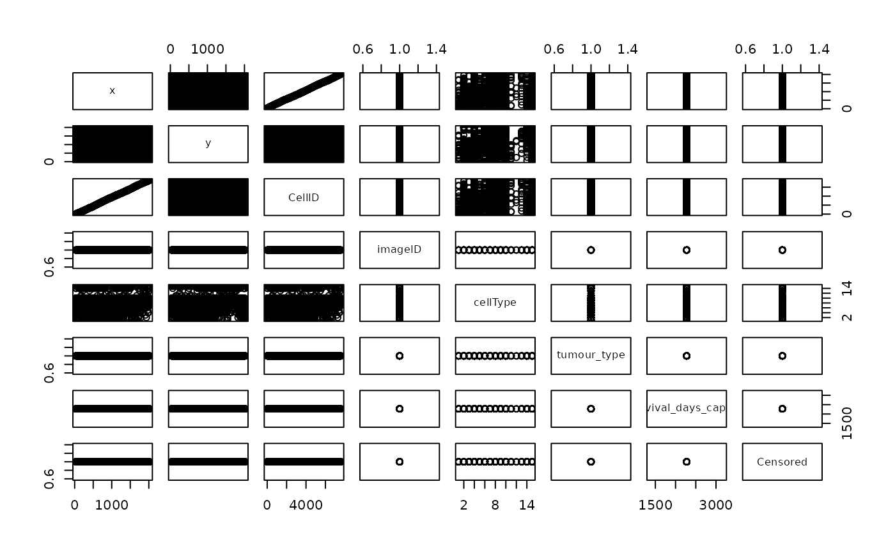

Function which randomises specified cells in an image and calculates the `Kontextual` value. This can be used to estimate the null distribution, of the parent cell population for significance testing.
This function relabels all specified cells within a single image, to estimate the null distribution of cell population specified.
Usage
relabelKontextual(
cells,
nSim = 1,
r,
from,
to,
parent,
image = NULL,
returnImages = FALSE,
inhom = TRUE,
edge = FALSE,
cores = 1,
spatialCoords = c("x", "y"),
cellType = "cellType",
imageID = "imageID",
...
)
relabel(image, labels = NULL)Arguments
- cells
A single image data frame from a SingleCellExperiment object
- nSim
Number of randomisations which will be calculated.
- r
Radius to evaluated pairwise relationships between from and to cells.
- from
The first cell type to be evaluated in the pairwise relationship.
- to
The second cell type to be evaluated in the pairwise relationship.
- parent
The parent population of the from cell type (must include from cell type).
- image
A single image from a Single Cell Experiment object.
- returnImages
A logical value to indicate whether the function should return the randomised images along with the Kontextual values.
- inhom
A logical value indicating whether to account for inhomogeneity.
- edge
A logical value indicating whether to perform edge correction.
- cores
Number of cores for parallel processing.
- spatialCoords
A character vector containing the names of the two spatial dimansions in the data. Defaults to `c("x", "y")`.
- cellType
The name of the cell type field in the data. Defualts to "cellType".
- imageID
The name of the image ID field in the data. Defualts to "imageID".
- ...
Any arguments passed into
Kontextual- labels
A vector of CellTypes labels to be permuted If NULL all cells labels will be radomised.
Value
A data frame containing Kontextual value for each randomised image. If `returnImages = TRUE` function will return a list with Kontextual values and the randomised images.
A data frame containing all pairwise cell relationships and their corresponding parent
Examples
data("kerenSCE")
kerenImage6 <- kerenSCE[, kerenSCE$imageID == "6"]
relabelResult <- relabelKontextual(
cells = kerenImage6,
nSim = 5,
r = 250,
from = "CD4_Cell",
to = "Keratin_Tumour",
parent = c("CD4_Cell", "Macrophages"),
cores = 2
)
data("kerenSCE")
kerenImage6 <- kerenSCE[, kerenSCE$imageID == "6"]
kerenImage6 <- kerenImage6 |>
SingleCellExperiment::colData() |>
data.frame()
# Permute CD8 T cells and T cell labels in the image
relabeledImage <- relabel(kerenImage6, labels = c("p53", "Keratin+Tumour"))
plot(relabeledImage)
